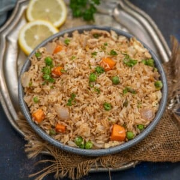

Fried Rice

Description
Hibachi Fried Rice (Japanese Fried Rice) is a rice stir fry where cooked rice is sauteed in a wok or a large skillet with butter, soy sauce, and other ingredients. It is like classic fried rice, plus the savory flavor from lots of butter.
The Japanese word Hibachi means “fire bowl.” It is also called Teppanyaki-style cooking. Traditionally, this cooking style refers to an open-top ceramic bowl containing burning charcoal for heating purposes.
These days, electric barbecues are used instead of an open fire with a large griddle or wok on top. When we are preparing it at home, all you need is a large wok or a large flat-bottomed pan.
When made at home, this fried rice comes together in no time and at a fraction of the cost. It tastes just like the fried rice at a Hibachi restaurant and requires some essential ingredients primarily available in the pantry.
This is also a great recipe to use up your leftover rice. This dish turns out better when made with one-day-old cold rice. So, whenever I have leftover rice, I quickly whip up this Hibachi-style fried Rice.
Serve it for a quick weekday meal or pack it for school or office lunchboxes.
Ingredients
- 4 tablespoons butter (salted or unsalted)
- ½ cup cubed onions (cut into ½ inch cubes)
- 2 teaspoons minced garlic
- ¼ cup green peas
- ¼ cup cubed carrots (cut into ½ inch cubes)
- 2 large eggs (whisked)
- 4 cups cooked and cooled white rice
- ½ teaspoon salt (or to taste)
- ½ teaspoon white pepper powder (or black pepper powder)
- 1 tablespoon soy sauce (use tamari for gluten-free)
- 1 tablespoon toasted sesame oil (or any other cooking oil)
- chopped green onions, cilantro, or sesame seeds for garnishing
Steps
- Heat a large flat wok, Chinese wok, or large skillet over medium-high heat until very hot.
- Add 4 tablespoon butter (salted or unsalted) to the wok and stir until it melts.
- Add ½ cup cubed onions (¼-inch cubes) and 2 teaspoon minced garlic and fry for 10-12 seconds.
- Now add ¼ cup green peas and ¼ cup cubed carrots (½-inch cubes) and saute for 15-20 seconds.
- Push the veggies to the sides of the wok.
- Add 2 whisked eggs and scramble them.
- Mix the scrambled eggs with the veggies.
- Add rice, salt, pepper powder, soy sauce, and sesame oil, and toss well.
- Check for salt and add more if needed.
- Garnish with chopped green onions, cilantro, and toasted sesame seeds, and serve hot with yum-yum sauce.
Home